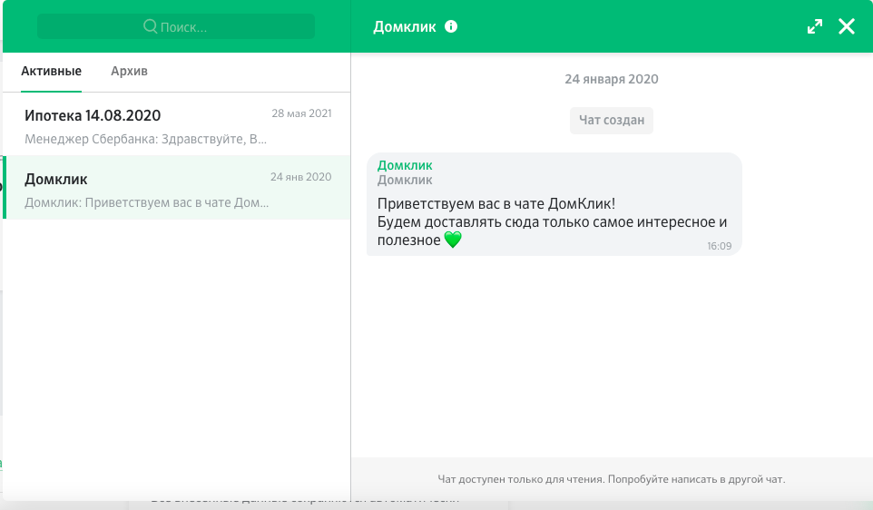
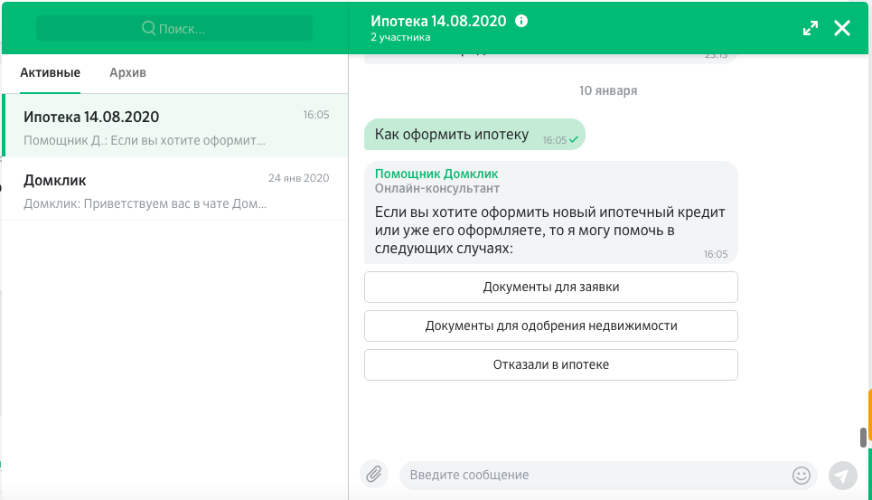
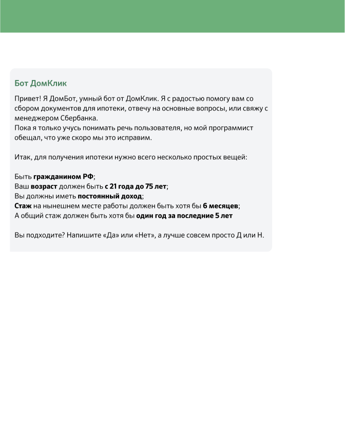
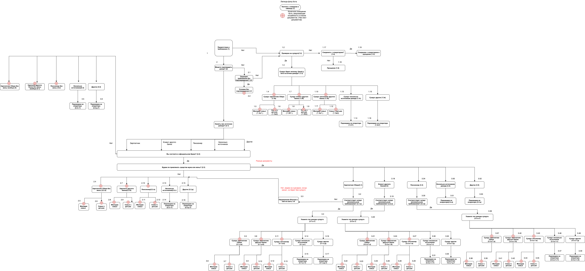
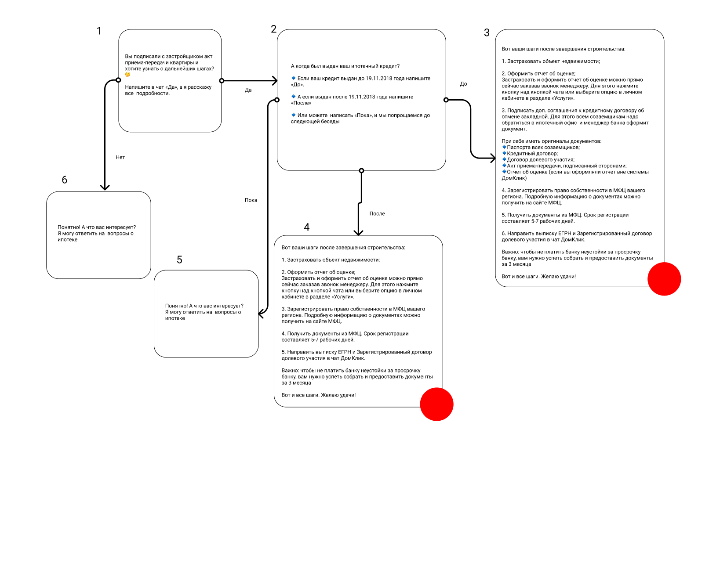
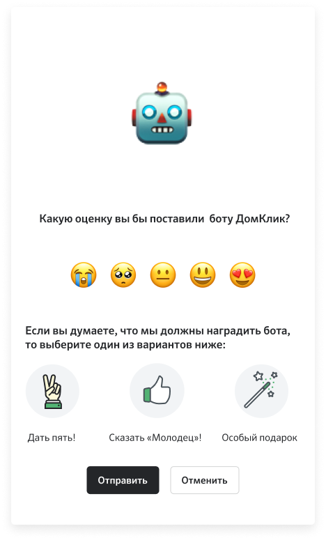

Диалоговый бот для цифровой фабрики ипотеки: от «чудовищного флоу» на бумаге до 45% автоматизации труда контакт-центра.
В рамках платформы обработки естественного языка Сбера был разработан проект чат-бота, который отвечал на вопросы пользователей об ипотеке. Я выполнял роль UX и райтера диалогов на проекте чат-бота ДомКлик и в тесной связке с командой развивал продукт бота в течение первого года: от проектирования и до запуска, а также первые месяцы правок и улучшений.

Первоначально бот отвечает по запросу с кнопками: пользователь выбирает активный саджест «Документы для заявки» и получает нужный список документов для ипотеки. Вторым способом входа в бот стало распознавание текста при общении с живым оператором. Основная продуктовая цель - автоматизация труда сотрудников цифровой фабрики по выдаче ипотечных кредитов.

Бот запускался без кнопок - это было бы слишком дорого с точки зрения платформы. Я предложил вариант с ответами «Да» и «Нет», чтобы построить дерево диалога.

Совместно с продакт-менеджером провёл ряд интервью с основными стейкхолдерами проекта - менеджерами контакт-центра и цифровой фабрики. В результате получился по-настоящему сложный флоу.

Определили два типа метрик. Первая - автоматизация труда, которую считали как дохождение до конца диалога: бот дал ответ, и вопрос пользователя закрыт. Такую метрику отмечал на флоу красным цветом.

Вторая метрика - субъективная удовлетворённость пользователя ответом бота (CSI). Для контроля качества бота отрисовал отдельную модалку оценки.

Постепенное включение и доработка дополнительных небольших сценариев, которые «вешаем» на NLP-платформу.
Через полгода стало заметно сокращение работы людей в контакт-центре на 45% - эффект, который можно было измерить в деньгах за счёт ФОТ.